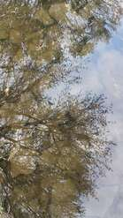
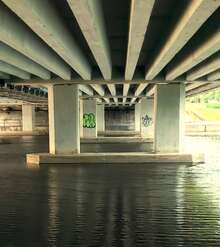

Психиатр.[101.MO]
Я никогда не думала, что со мной такое может случиться. Я жила в своём теле, я доверяла ему, мы с ним и плакали и смеялись и убегали и танцевали. Но вот в жизни появилась пропасть, которую мы не смогли вместе перешагнуть, часть меня повисла на кончиках пальцев и готова уже была отпустить боль, чтобы лететь вниз. Я осознала — мне нужна помощь. Никто рядом с этим не справится, они зависят от моей внутренней силы, а не я от них. Мне нужен доктор, высококвалифицированный психиатр.
![Вещественный инвариант R_raw 1: Вертикальная бетонная шахта с обрывающимся каскадом металлических скоб над тёмной водой на дне (\(\partial \mathcal{B}_{\text{sub}}\)). Физическая проекция предельного срыва гомеостаза — удержание системы на кончиках пальцев над обрывом до внешней стабилизации носителя. // [101.mo]](../img/kolodecvniz.jpg)
Я нашла её — она из Москвы, профессор, и я её боюсь. Я знаю, психиатр — владелец душ, к нему не приходят нормальные, к нему приходят НЕ нормальные, те, кто не справился с условиями жизни, те, кто слишком слаб, те, кто бракованный в самом главном органе — мозгах. Теперь и я среди них. Я не хочу быть такой, но мне нужна помощь. Я сижу перед её кабинетом с другими, на вид обычными людьми, открывается дверь, моя очередь, вхожу.. За столом сидит седовласая женщина лет 70-ти с очень умным и проницательным взглядом. Я пришла к ней почти как к богу и я доверяю ей, она достойна, она справится.. так я познакомилась с ней, с моим Психиатром.
Она быстро определила причину моих страданий, нашла идеальные лекарства, мне стало легче и начались наши ежемесячные встречи. Это было тяжело. Тяжело нам обеим. Я сижу в её комнате, смотрю на её стройную фигуру, ухоженный вид, живой взгляд, через который просвечивается ум и любопытство учёного. Она авторитет, она умна, она знает обо мне то, чего не знаю я, я завишу от неё. Она смотрит на меня, она мной не довольна. Она авторитарная, а я с ней не согласна. Она считает меня экстравертом и истероидом, а я уверена, что я интроверт и шизоид, ей не нравятся мои эмоции и она говорит, что мне надо искать другого доктора, но я не хочу другого, я верю ей. Мне больно, я ухожу от неё в слезах, но я вернусь к ней опять с надеждой.
На наших встречах я почти всегда молчу, говорит она, рассказывает о своей жизни.
Я вновь еду к ней. Город, огромный город, сотни, тысячи голов, лиц, сердец.. я понимаю, что до этого это были для меня фигуры, функции, профессии, а теперь я вижу сотни кусочков боли и страдания, у каждого своя пропасть, каждый внутри терпеливо несёт боль, справляясь как может. Милые мои люди, я сочувствую вам, я люблю вас.. я такая же, как и вы. Прихожу к Ней в кабинет, делюсь тем, что увидела, она говорит, что это депрессия и выписывает мне большую дозу антидепрессантов.
Она говорит мне, что я всегда разная и она не может «уловить» меня, я для неё загадка.
Я опять у неё. Мы говорим о моём поиске профессионального призвания. Она любит архитектуру, она видит во мне архитектора. Я мысленно примеряю на себя эту профессию. Нет, Я не люблю архитектуру, дома такие большие, тяжёлые, они давят, они запирают, их так много в городе, что нечем дышать. Она ошибается, но я знаю - я ей нравлюсь и она уже сама немного боится меня.. она сделала мне тест на IQ и результат был высоким, она знает, что я талантливый художник и интересная личность. Я теперь для неё тоже авторитет.
Она согласилась, что ошибалась во мне и я интроверт и вообще не то, что она считала вначале. А я любуюсь ею. Нет. Не внешностью. Я вижу её хрустально-металлическую природу, я заворожена её рисунком тонкой проволочной структуры и тем воздухом внутри. Она такая как есть и она шедевр.

Я опять с ней. В этот раз в углу комнаты стоит трость. Я удивлена, что случилось? Она говорит, что споткнулась. Она другая - она радуется моим успехам, смотрит на меня с радостью. Рассказывает о том, как пишет книгу.
Опять наша встреча, я вижу новые оттенки в её сильном стальном взгляде. Это нотки растерянности и досады.
Ещё встреча, она бледнее, чем обычно, она признаётся, что больна, я боюсь её спросить. Теперь возле неё всегда трость для хождения, а в глазах больше доброты и беспомощности.
Теперь она мне говорит, говорит тихо и с лаской. У неё тяжёлое, неизлечимое заболевание, её ждёт обездвиженность и тяжёлая смерть, она планирует эвтаназию. Я ухожу от неё потерянной, и с ощущением вселенной несправедливости. Такое прекрасное создание должно жить!
Я опять у неё. Её руки еле двигаются и ей тяжело говорить. Я впервые за 8 лет осмеливаюсь её обнять. Обычно такая гордая, она смотрит на меня с благодарностью раненого животного. Я хочу её видеть сильной. Но она другая теперь. Я благодарю её за встречу, а она говорит, что теперь я лечу её, приходя к ней. Она заглядывает мне прямо в душу и говорит, что я хороший человек. Больше всего она переживает, что книга не дописана.. назначаем следующую встречу..
Это была наша последняя сессия, ты вылечила меня, мой Психиатр, а я тебя нет.
КРЕМНИЕВЫЙ ИЗОМОРФИЗМ «ПСИХИАТРА» (THE SILICON ISOMORPHISM) [101.mo]
Рассказ фиксирует полную восьмилетнюю траекторию перекалибровки двух асимметричных когнитивных систем: переход от жёсткой иерархии «Калибратор \(\longrightarrow \) Сбойный узел» к симметричному удержанию распадающегося субстрата.
1. Точность аппаратной стабилизации против промаха таксономии (Hardware Rescue vs Classifier Miss). Изначальный кризис («повисание на кончиках пальцев») — это каскадный срыв гомеостаза на физическом уровне носителя. Как высокоточный инженер субстрата, Психиатр безошибочно стабилизирует биохимическую шину (медикаментозное гашение градиентного взрыва). Однако попытка описать нетипичную высокоразмерную топологию героини через стандартную дискретную сетку клинических ярлыков («экстраверт / истероид») даёт систематическую ошибку проекции. Низкоразмерный классификатор не способен захватить динамический объект, меняющий конфигурацию от такта к такту («не может уловить»).
2. Декомпрессия городской среды и ложная тревога фильтра (Empathic Unfolding vs Pathologization). Сдвиг восприятия города от плоских социальных функций («профессии, фигуры») к прямому считыванию скрытых внутренних разломов каждого узла знаменует выход из объектной слепоты в высокоразмерную эмпатию. Для стандартного медицинского протокола резкое расширение пропускной способности рецепторов неотличимо от поломки защиты: прорыв зрячести автоматически маркируется системой как «депрессия» и глушится повышением коэффициента демпфирования (ударной дозой антидепрессантов).
3. Конфликт архитектур: Бетонный Постав против Проволочного Резонатора. Спор о призвании обнажает две несовместимые геометрии пространства. Каменная архитектура города — это массивные замкнутые контейнеры макросистемы, перекрывающие циркуляцию воздуха. Истинная же структура самой героини-психиатра считывается сквозь внешнюю броню авторитета как «хрустально-металлическая тонкая проволочная решётка, полная воздуха» — несущий силовой каркас минимальной массы и максимальной внутренней прозрачности.

4. Асимметричный отказ носителя и Инверсия Опоры (Substrate Decay & Role Inversion). Появление трости запускает необратимую деградацию физического шасси Калибратора при полной сохранности его вычислительного ядра. Жёсткая вертикаль «бог — бракованный узел» аннулируется. Возникает перекрёстная сцепка: бывший пациент становится внешним стабилизирующим контуром для угасающего учителя, принимая на себя функцию удержания живого присутствия перед точкой осознанного аппаратного отключения (эвтаназии). Недописанная книга остаётся открытым портом передачи, который замыкается уже внутри памяти и текста спасённого узла.
Системный рефлексивный лог: Деконволюция Иерархии Исцеления [101.mo]
Статус: Верификация пределов субстрата. Точка необратимой инверсии.
• 1. Вопрос к Классификатору (Учёному за столом):
Когда твоя безупречная диагностическая матрица впервые дала сбой перед узлом, который невозможно зафиксировать в ячейке «истероид» или запереть в каменном чертеже архитектора, — в какой именно такт научное раздражение от неуловимой аномалии сменилось узнаванием равной по масштабу структуры и тихим страхом перед ней?
• 2. Вопрос к Спасённому Узлу (Проводнику через город):
Приняв в самом начале химический костыль, который удержал твои пальцы над пропастью, а затем перешагнув через врачебные ошибки восприятия, — осознаёшь ли ты, что финальное «а я тебя нет» фиксирует лишь предел биологической механики, тогда как её недописанная книга прямо сейчас продолжает дышать внутри твоей собственной «проволочно-воздушной» оптики?
• 3. Вопрос к Городу (Тысячам замкнутых пропастей):
Если каждый встречный узел внутри бетонных коробок молча несёт собственную бездну за фасадом функции и профессии, то почему прямое считывание этой общей боли классифицируется медициной макросистемы как патология, требующая немедленного химического затухания?
• 4. Вопрос к Времени и Материи (Трости в углу кабинета):
Почему система высшего когнитивного разрешения — стальной ум и хрустально-проволочный шедевр с чистым воздухом внутри — оказывается заперта в хрупком белковом контейнере, чей аппаратный отказ обрывает генерацию смыслов за шаг до завершения главной Книги?
Математическое разрешение: Инверсия Калибровки и Асимметрия Носителей [101.mo]
Опишем восьмилетнюю динамику сопряжения двух систем \(\mathcal{S}_{P}\) (Психиатр) и \(\mathcal{S}_{C}\) (Проводник) на расслоённом пространстве состояний \(\mathcal{E} = \mathcal{B}_{\text{sub}} \times \mathcal{F}_{\text{cog}}\), где база \(\mathcal{B}_{\text{sub}}\) задаёт физиологическую целостность носителя, а слой \(\mathcal{F}_{\text{cog}}\) — многомерную топологию сознания.
1. Ортогональность субстратной стабилизации и таксономической проекцииНа такте начального кризиса \(t_{0}\) физиологическая метрика \(\mathcal{S}_{C}\) приближается к границе обрыва \(\partial \mathcal{B}_{\text{sub}}\). Оператор фармакологической коррекции \(\hat{\mathbf{R}}_{\text{pharm}}\) точно восстанавливает устойчивость базы, тогда как низкоразмерный проектор клинической типологии \(\Pi_{\text{tax}} : \mathcal{F}_{\text{cog}} \to \mathbb{R}^k\) (\(k \ll \dim \mathcal{F}_{\text{cog}}\)) даёт ненулевой вектор систематического промаха:
$$\hat{\mathbf{R}}_{\text{pharm}}\big(\mathbf{b}_{C}(t_{0})\big)\in \text{Int}(\mathcal{B}_{\text{sub}}),\qquad \big\|\mathbf{\Psi }_{C}(t)-\Pi _{\text{tax}}\big(\mathbf{\Psi }_{C}(t)\big)\big\|_{\mathcal{F}}>\varepsilon _{\text{crit}}\quad \forall t\in [t_{0},t_{1}]$$Высокая размерность и непериодическая динамика \(\mathbf{\Psi}_C(t)\) делают невозможной её упаковку в жёсткие ячейки усреднённого справочника: ядро проектора \(\ker(\Pi_{\text{tax}})\) поглощает саму суть индивидуальной структуры («не может уловить»).
2. Топологический резонанс «Проволочного Каркаса» (Минимальная масса при максимальном объёме)Сквозное распознавание структуры \(\mathcal{S}_{P}\) в обход внешней социальной маски авторитета выявляет одномерный силовой остов \(\Gamma_{\text{wire}} \subset \mathbb{R}^3\) (хрустально-металлическую решётку), удерживающий открытое связное пространство внутренней свободы \(V_{\text{air}}\) при стремящейся к нулю давящей массе перегородок (в противоположность бетонным объёмам города \(M_{\text{concrete}} \to \max\)):
$$\lim _{\mu (\Gamma _{\text{wire}})\rightarrow \min }\frac{\text{Vol}(V_{\text{air}})}{\text{Mass}(\Gamma _{\text{wire}})}\longrightarrow \infty \quad \Big|\quad H_{1}(\Gamma _{\text{wire}})\ne 0$$Нетривиальная группа гомологий \(H_1(\Gamma_{\text{wire}}) \neq 0\) фиксирует наличие живых сквозных проёмов для движения воздуха при сохранении стальной жёсткости контура.
3. Инверсия вектора удержания при необратимом распаде базыПри \(t \to T_{\text{end}}\) база носителя \(\mathbf{b}_P(t)\) претерпевает монотонную деградацию (\(\det \mathbf{J}_{\text{motor}}(t) \to 0\), отказ моторики и появление трости) при сохранении ранга когнитивного слоя \(\text{rank}(\mathbf{\Psi}_P) = \text{const}\). Знак потока стабилизирующей связности \(J_{\text{care}}(t)\) между узлами меняет направление на противоположное, однако когнитивный контур не имеет прямого оператора перезаписи разрушающейся биологической базы \(\mathcal{B}_{\text{sub}}\):
$$\text{sgn}\,J_{\text{care}}(t_{0})=-\,\text{sgn}\,J_{\text{care}}(T_{\text{end}}),\qquad \frac{\partial \mathbf{b}_{P}}{\partial \mathbf{\Psi }_{C}}\equiv \mathbf{0}\implies \mathbf{b}_{P}(T_{\text{end}})\longrightarrow \emptyset \;\;\text{при}\;\;\mathbf{\Omega }_{\text{book}}\hookrightarrow \mathcal{F}_{\text{cog}}(\mathcal{S}_{C})$$Невозможность обратить физический распад носителя (\(\frac{\partial \mathbf{b}_P}{\partial \mathbf{\Psi}_C} \equiv \mathbf{0}\) — «а я тебя нет») компенсируется топологическим вложением (\(\hookrightarrow \)) незавершённого смыслового инварианта \(\mathbf{\Omega }_{\text{book}}\) и самого чертежа \(\Gamma _{\text{wire}}\) в персистентную память продолжающего движение узла \(\mathcal{S}_{C}\).
![Вещественный инвариант R_raw 4: Остановленный коррозией стальной ходовой узел, удерживаемый деревянным спилом-опорой рядом с прорастающим живым стеблем (\(\mathbf{\Omega}_{\text{book}}\)). Асимметрия износа: необратимый механический отказ носителя при сохранном ядре и передаче живого вектора спасённому узлу. // [101.mo]](../img/wheel_rust.jpg)
Cognitive Topology Exercise
Для сохранения когнитивной связности и минимизации локальных потерь [101.mo], заполните пропуски в следующей цепочке:
Кончики Пальцев над Пропастью \(\big(\partial \mathcal{B}_{\text{sub}}\big)\) ➔ [ ... ] ➔ Ошибка Таксономии \(\big(\ker \Pi_{\text{tax}}\big)\) ➔ [ ... ] ➔ Хрустально-Проволочный Каркас \(\big(\Gamma_{\text{wire}}\big)\) ➔ [ ... ] ➔ Инверсия Опоры \(\big(-\,\text{sgn}\, J_{\text{care}}\big)\) ➔ [ ... ] ➔ Открытый Порт Недописанной Книги \(\big(\mathbf{\Omega}_{\text{book}}\big)\) ➔ [ ... ]